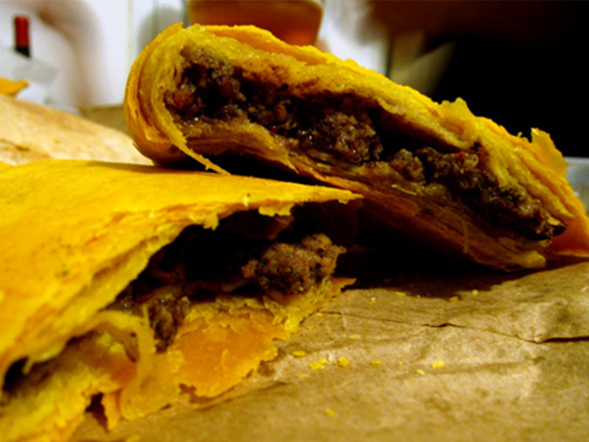

MIP © (Matthew's Irie Place) is a registered restaurant that has been around since 2014.
We are mostly known for our real irie Jamaican flavors that captivates your stomach with each bite
taken. We also specialize in catering for any type of events, such as weddings, birthday parties, church convention. You name it!
We also do take outs and looking forward to expand our restaurant with food trucks, willing to serve our customers throughout the
five (5) boroughs of New York City. Matthew's idea of the restaurant was to be more than just a restaurant on the block,he wanted
customers to more than just dine; we contructed a space where people could come and relax or party. It is our newly designed
Rooftop Lounge. (click here for our rooftop Lounge page)
If you have a desire for caribbean taste and eager to try it, you are always welcome to visit MIP © Jamaican Restaurant. Come
join us and everything will be IRIE!!